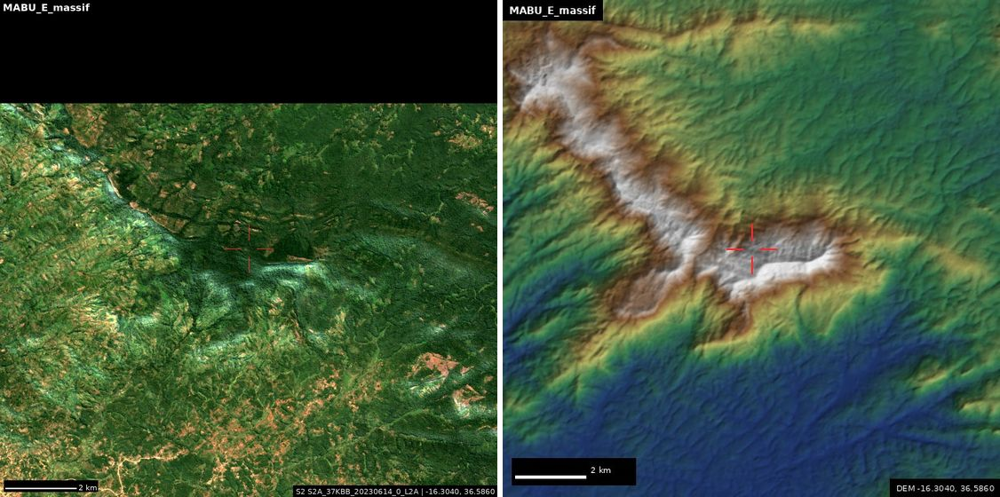
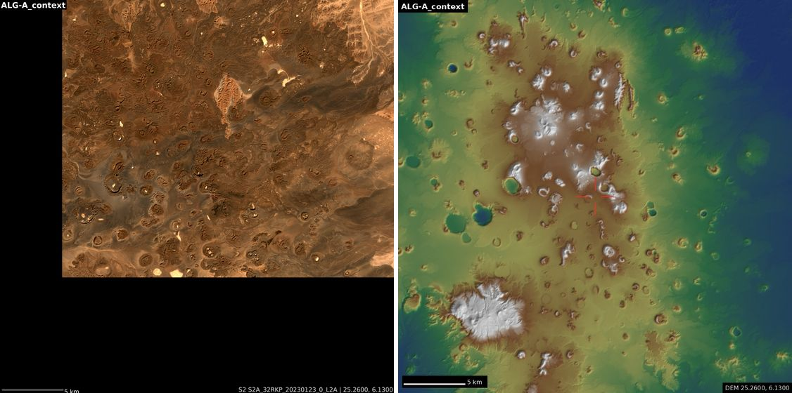
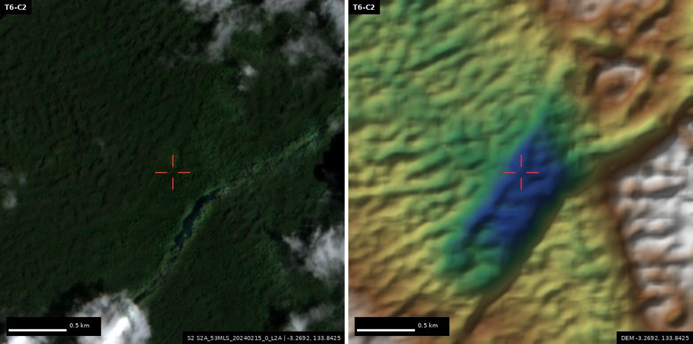
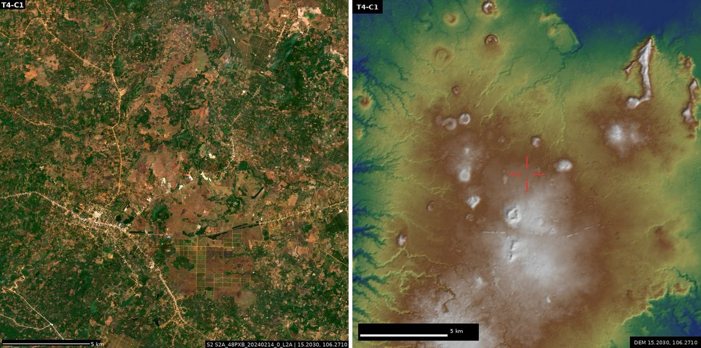
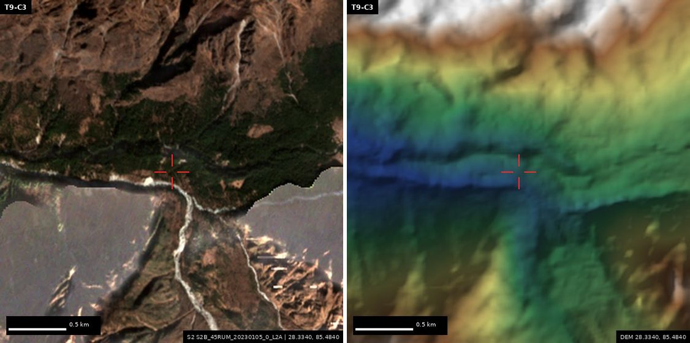
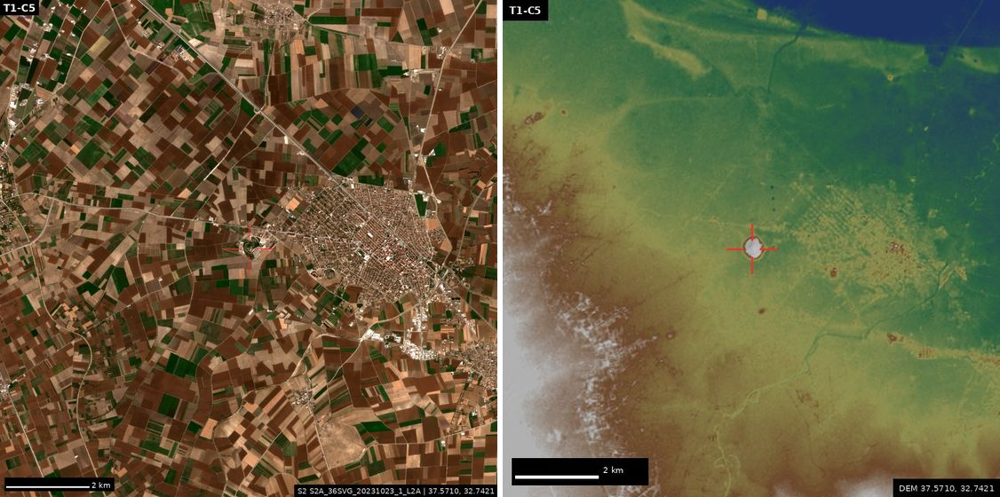
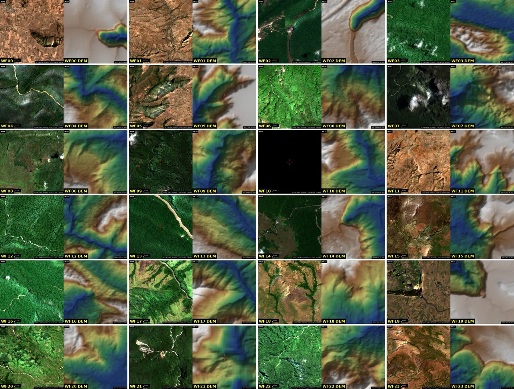
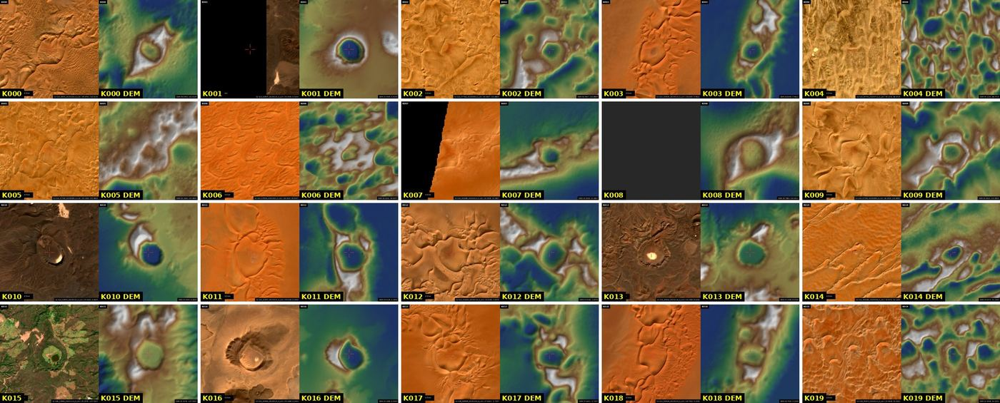
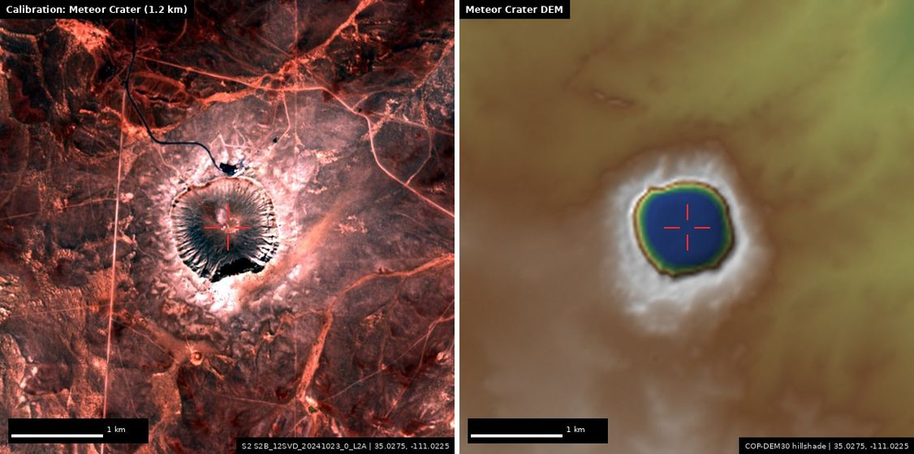

Operation Hidden Earth · overnight run · 9–10 Nov 2026
Hidden Earth Field Notes
Ten research teams ran overnight, each in one domain: lost capitals, buried Silk Road towns, Saharan mysteries, missing impact craters, unsurveyed forests, giant sinkholes, unmined lidar, lost colonial forts, brand-new landforms and desert megastructures. Each team joined independent clues (old itineraries, river paleochannels, tektite chemistry, canopy-height maps) into coordinates. Alongside them I ran two planet-scale scans of my own: one for craters across 2,887 desert elevation tiles, one for tall waterfalls across seven mountain regions. Every lead was then checked in Sentinel-2 imagery and the Copernicus elevation model, and a skeptic tried to find each one already published.
Nothing here is a confirmed discovery yet. These are the places where the clues converge and where, as far as we could find, nobody has looked closely. Each card opens in Google Earth, which has the sub-metre imagery that this sandbox could not reach.
10research teams
91candidates proposed
2,8871°×1° desert tiles scanned for craters
384mountain tiles scanned for waterfalls
13claims put through a skeptic pass
68places in this notebook and the KML
Human-made: round 2
Round 2 focused on human-made sites. Coordinates of possibly unrecorded archaeological sites are rounded to about 10 km here to avoid helping looters; exact positions are in the owner's private report.
H1Ruined towns & fortsNew synthesisLooting-sensitive region
Oval fortified mound with keep and moat, east of Zaranj (Afghan Sistan)
30.9000° N, 62.0000° E · ±10 km
An 11.5 m oval mound (210 × 135 m) with a 45 m rectangular building on top and a ring about 300 m across around it, like a moat or outer wall. A 70 m square enclosure sits 2.3 km NNW. It has the shape of a Sistan qal'a. (Location rounded to about 10 km in the public copy.)
What to look for Mud-brick walls, a gate gap in the outer ring, and wind-cut erosion ridges around the base. Rule out a natural yardang reused by modern buildings.
Evidence chain
H3 imagery sweep of the Afghan Sistan corridor; calibrated on Pust-i Gau and Toprak-Kala, which show clearly at 10 m
The area was surveyed by the 1970s Helmand Sistan Project, whose coordinates are not public, so this may be recorded but unpublished
H2Ruined towns & fortsNew synthesisLooting-sensitive region
Abandoned grid town around a 12.7 m tell, NE of Pust-i Gau (Afghan Sistan)
31.3000° N, 62.1000° E · ±10 km
A rectilinear grid of compounds covering at least 1 km² around a roughly 200 m mound. Its tone in the short-wave infrared matches the mud-brick walls of Pust-i Gau, 6 km away. (Location rounded to about 10 km in the public copy.)
What to look for Courtyard houses in a grid, streets, a citadel on the mound, canal lines leading in.
Evidence chain
H3 imagery sweep
DEM mound 12.7 m
Probably in the unpublished HSP/Fischer survey lists
H3Ruined towns & fortsNew synthesisLooting-sensitive region
Square walled enclosure (qal'a?) on a rise, Afghan Sistan
30.9000° N, 62.1000° E · ±10 km
A crisp 100 m square with thick walls (black in SWIR) and a 30-40 m ring beside it, on an 8.6 m rise. It is either a caravanserai or fort, or a modern compound or security post. (Location rounded to about 10 km in the public copy.)
What to look for Corner towers and a central courtyard suggest a caravanserai or fort. Vehicles, razor wire or new roofs mean it is modern.
H4Ruined towns & fortsNew synthesisLooting-sensitive region
Rampart-ringed oval mound in abandoned fields, SE of Pust-i Gau
31.2000° N, 62.1000° E · ±10 km
A 420 × 270 m oval with a dark raised rim, 8.7 m high in the DEM, sitting among relict strip fields. (Location rounded to about 10 km in the public copy.)
What to look for A rampart circuit and interior building mounds.
H5Ruined towns & fortsNew synthesisLooting-sensitive region
Walled oval enclosure on a mound, north of Zaranj (Afghan Sistan)
31.3000° N, 61.9000° E · ±10 km
The lead's DEM tell finder flagged a 21 ha, 11 m mound. In Sentinel-2 it shows a bounded oval enclosure about 400 m across. This is an independent hit in the same corridor as H1-H4. (Location rounded to about 10 km in the public copy.)
What to look for An enclosure wall on the mound.
Evidence chain
Lead's DEM tell finder (it found Tell Brak blind among 242 Khabur tells)
H6Lost capitalsProposed by othersLooting-sensitive region
Opis (Upi), and possibly Akshak, at Tulul al-Mujaili' on a relict Diyala levee
33.2000° N, 44.7000° E · ±10 km
Opis was a major Tigris-Diyala city of Babylonian and Persian times. The DEM puts the proposed mound on a NNW-SSE relict levee 15 km NE of Ctesiphon, which splits at a distributary node 6.5 km SSW. The channel link is new; the identification is published. (Location rounded to about 10 km in the public copy.)
What to look for A 500 × 200 m low mound and the levee ridge running past it.
Aratu, a lost Roman road station = the fort at Zawiyet el-Agdab (Egypt)
31.3906° N, 25.5039° E · ±3 km
Aratu is on the Tabula Peutingeriana but unlocated in the Barrington Atlas. Its road distances (Catabathmus 28, Nesus 26 Roman miles) put the distance-only point in the sea, so the station must lie inland. The only recorded Roman fort within 9 km of the inland solution fits the distances to within 6%.
What to look for A square Roman fort a few tens of metres across.
Evidence chain
H2 missing-station interpolation; the blind test against a known station (Ajdabiya) missed by 5.4 km
The fort is already recorded; the new part is identifying it as Aratu
Atil, the Khazar capital, tested at Samosdelka (Volga delta)
46.0240° N, 47.8398° E · ±3 km
Raised ground on both banks of a 250-300 m channel, with an island at a fork, matches the Arab 'twin city on both banks' layout. Each bank is far smaller than the accounts imply, though, and a 2020 review rejected the identification.
What to look for Settlement ground on both banks of the Staraya Volga channel.
H9Lost capitalsProposed by othersLooting-sensitive region
Ekallatum zone, 18 km north of Assur: a salvage priority
35.6000° N, 43.2000° E · ±10 km
Ekallatum was Shamshi-Adad I's royal city. The published '18 km north of Assur, west bank' lands on a terrace-edge town, and no floodplain tell of 4 m or more lies below it. The whole valley is in the Makhul dam reservoir zone, where construction resumed in 2021. (Location rounded to about 10 km in the public copy.)
What to look for A terrace-edge tell under or beside the modern town.
H10Lost road stationsNew synthesisLooting-sensitive region
Merrha of Isidore of Charax = Mari (Tell Hariri)?
34.6000° N, 40.9000° E · ±10 km
Five schoeni below Dura, with the schoenus calibrated on the Dura-Anatho leg, lands 2.6 km from Mari along the river. The name Merrha echoes Mari. (Location rounded to about 10 km in the public copy.)
What to look for Mari's great tell beside the Euphrates.
Zalpuwa 'on the sea' at İkiztepe (Kızılırmak delta)
41.6189° N, 35.8436° E · ±3 km
An isolated 22 m hill at the inner edge of a delta that held lagoons until about 4,000 years ago, 7.7 km from today's coast. That fits Zalpuwa 'on the sea' in the Old Assyrian era.
What to look for An excavated hill above a flat delta.
H12Lost road stationsProposed by othersLooting-sensitive region
al-Afa'iya water station on the Darb Zubayda pilgrim road (Saudi Arabia)
23.0000° N, 40.8000° E · ±14 km
The 32/34-mile interpolation between Mahd adh-Dhahab and Faydat al-Mislah falls 1.25 km from a bright 70-90 m square at the edge of a clay pan. It could be a plastered birka (Abbasid reservoir). (Location rounded to about 10 km in the public copy.)
What to look for A square or round stone-lined reservoir with a settling tank. Only 2 of 4 known tanks show at 10 m, so zoom in.
H13Ruined towns & fortsNew synthesisLooting-sensitive region
Round wooded settlement mounds, central Mali
13.2000° N, 5.5000° W · ±10 km
The DEM tell finder found a 55 ha, 6 m round mound with a dark wooded cap beside the river. A second one, 85 ha and 12 m, sits at [location withheld]. Their shape is typical of abandoned Middle Niger towns. Regional registers could not be checked. (Location rounded to about 10 km in the public copy.)
What to look for Pottery-strewn mound surfaces, house-wall rings and erosion gullies.
Lost sanctuaries of ancient secret and mystery cults: the oldest cult centres on Earth in southern Turkey, Greek initiation sanctuaries and oracles never found, and missing temples of Mithras on Hadrian's Wall. Present-day groups are deliberately left out. The last three cards are already-documented historical cult compounds, there for context.
S1Secret & mystery cultsNew synthesisLooting-sensitive region
Lost mithraeum of Whitley Castle (Epiacum), Northumberland
54.8000° N, 2.5000° W · ±10 km
Mithraism was a Roman mystery cult that met in small, half-sunken 'cave' temples. A Mithras altar turned up in 1837 about 91 m east of this fort's north-east corner. At Housesteads, Carrawburgh, Rudchester and Segontium the temple sits 145-342 m out, 6-45 m downslope, in a hollow. That pattern points to the falling ground about 200 m east of the fort. (Location rounded to about 10 km in the public copy.)
What to look for A damp hollow or terrace on the east slope. Orbit can't see a buried temple; this is a magnetometry or resistivity target.
S2Secret & mystery cultsProposed by othersLooting-sensitive region
Karnasion grove, sanctuary of the Andanian Mysteries (Messenia)
37.3000° N, 21.9000° E · ±10 km
These were secret initiation rites second only to Eleusis, and their grove has never been located. Pausanias puts it 8 stades (about 1.5 km) from Andania, and the great Mysteries inscription was found 10 minutes' walk from Konstantinoi. Together these favour a spot about 1 km north-west of the published Divari-spring placement. (Location rounded to about 10 km in the public copy.)
What to look for A spring-fed, wooded valley floor; terrace walls.
Evidence chain
M1 reading of Pausanias 4.33 + the inscription findspot
S3Secret & mystery cultsNew synthesisLooting-sensitive region
Oracle of Trophonius, the underground oracle of Lebadeia (Greece)
38.4000° N, 22.9000° E · ±10 km
Consulting this oracle meant a terrifying descent into a narrow underground chamber. Its entrance has never been securely identified. Pausanias's order (grove, then oracle, then a further climb to the temple of Zeus Basileus) plus the elevation profile points to the only level shelf on the ascent. A rival published claim puts it at a well beside the summit temple. (Location rounded to about 10 km in the public copy.)
What to look for A rock-cut shelf above the Herkyna springs gorge.
S4Secret & mystery cultsNew synthesisLooting-sensitive region
Göbekli Tepe look-alike knoll, southern Tektek escarpment (Turkey)
37.0000° N, 39.2000° E · ±10 km
The Taş Tepeler enclosures, with their carved T-shaped pillars, are humanity's oldest known cult centres (about 9600-8000 BC). A terrain score built from the known sites ranks Göbekli Tepe itself in the top 1.5% of 2,193 regional knolls. This knoll, 11 km south of Harbetsuvan on the same escarpment as Kurt, Karahan and Harbetsuvan, has the radial profile closest to Göbekli's of the 38 examined. (Location rounded to about 10 km in the public copy.)
What to look for A soft, rounded artificial-looking mound and rows of protruding stone slab tops at full zoom.
S5Secret & mystery cultsNew synthesisLooting-sensitive region
Plateau summit between the Euphrates sites and the Taş Tepeler group
36.9000° N, 38.1000° E · ±10 km
A soil-capped summit on the Birecik-Suruç plateau, in the survey gap between the Euphrates PPNA sites and the western Taş Tepeler cluster. Of the summits examined, its tone pattern is the most like Göbekli's. (Location rounded to about 10 km in the public copy.)
S6Secret & mystery cultsNew synthesisLooting-sensitive region
Vindolanda's missing mithraeum (Hadrian's Wall)
55.0000° N, 2.4000° W · ±10 km
Vindolanda is the best-studied fort on the Wall, yet no Mithras temple has been found there. Pattern scoring picks the stream hollows 150-170 m out and about 10 m below the fort. (Location rounded to about 10 km in the public copy.)
What to look for Geophysics target; nothing visible from orbit.
Rajneeshpuram / Big Muddy Ranch (Oregon), historical context
44.8300° N, 120.4870° W · ±1 km
The 1980s commune of the Rajneesh movement, which was behind the 1984 salmonella attack. It is now a youth camp, and its buildings and reservoir are still clear from orbit.
New leads from our own analysis. Two of them, the Mabu-east forest and the Algerian crater field, turned up no prior record in the skeptic pass.
A1BiodiversityNew synthesis
Unsurveyed forest massif 20 km east of Mount Mabu (Mozambique)
16.3040° S, 36.5860° E · ±3 km

Left: Sentinel-2 true colour, 10 m. Right: Copernicus GLO-30 elevation, hillshaded. Red cross = coordinate.
After Mabu itself, this is the strongest tall-canopy (>20 m) signal in northern Mozambique: about 11 km² on a ridge with about 940 m of relief. It may be the next 'Google Earth forest'.
What to look for A closed, dark-green canopy on the ridge crest that stands out from the miombo and farmland around it. Compare it with Mabu's forest 20 km to the west. Rule out tea or eucalyptus plantations, which grow in neat blocks.
Skeptic checkNot found in the literature. The Kew/Bayliss/Timberlake satellite-led programme (Mabu, Namuli, Inago, Chiperone, Cucutea, Ribáuè, Mchese) does not list these massifs. The region is actively worked, so treat them as unsurveyed in print, not proven unvisited.
Evidence chain
T5 isolated-summit scan over 11-18°S, 33-41°E, with tall-canopy fraction from the Meta 1 m canopy-height map (Mabu core 16.6%, miombo 0.6%)
Mabu was found exactly this way, from imagery, by Bayliss in 2005, and was then shown to hold many new species
A second, weaker massif sits at -16.354, 36.734
Lead's search found no published survey of a massif east of Mabu (Mabu literature only)
Field of rimmed bowl craters, Amadror/Tefedest (Algeria)
25.2600° N, 6.1300° E · ±20 km

Left: Sentinel-2 true colour, 10 m. Right: Copernicus GLO-30 elevation, hillshaded. Red cross = coordinate.
The global crater scan found at least 7 rimmed bowls 0.45-1.35 km wide and 30-135 m deep in dark rock. Their clustering points to a volcanic maar or tuff-ring field, not an impact.
What to look for Round craters with raised rims and pale clay floors. Check whether this is a catalogued Hoggar volcanic district. If not, it is an undocumented maar field.
Skeptic checkNot found as a named field. No catalogued Algerian volcanic field sits here (Atakor, Tahalra, Manzaz, In Teria and In Ezzane are elsewhere). The craters' form matches the In Teria and Oukcem maars, so this is most likely an unmapped maar/tuff-ring group. That is a real geological gap, though not an impact.
Evidence chain
Global DEM crater scan (2,887 tiles) found Tenoumer, Talemzane, Amguid, Wolfe Creek and Barringer blind
Not in the scan's volcanic exclusion list. A second cluster sits at 25.09N 8.00E (3 craters, white floors)
Left: Sentinel-2 true colour, 10 m. Right: Copernicus GLO-30 elevation, hillshaded. Red cross = coordinate.
A near-perfect closed sinkhole about 1.3 km across and about 260 m deep in the Copernicus DEM, inside the Darai polygonal karst.
What to look for A round, forest-lined pit far larger than the cockpit hollows around it. Tilt the 3D view to see the wall depth. A 30 m DEM under-reads deep pits, so the real depth may be larger.
Skeptic checkRegion known; this spot possibly known. Darai is a classic giant-doline province. A 1993 Centre Terre caving report lists a 'Mégadoline' on the Darai plateau that may be this feature; its coordinates could not be read.
Evidence chain
T6 closed-depression detector, calibrated on Xiaozhai tiankeng and on Sima Humboldt and Sima Martel
The floor elevation is measured TanDEM-X data, not void fill (checked in the DEM)
Lead's 3 km DEM/S2 view: the feature dwarfs every neighbouring doline (figure)
Twin giant closed basins, Lengguru fold belt (West Papua)
3.2692° S, 133.8425° E · ±0.8 km

Left: Sentinel-2 true colour, 10 m. Right: Copernicus GLO-30 elevation, hillshaded. Red cross = coordinate.
Two closed karst depressions about 220 m and 255 m deep (sister basin at -3.3492, 133.9714), in a fold belt that cavers have barely visited.
What to look for Forested elongated pits or uvalas with steep walls. The sister basin's floor was a radar void, which often means a very deep shaft.
Skeptic checkRegion known; these spots unreported. IRD/LIPI expeditions (2010-2017) describe Lengguru dolines and poljes in general. Copernicus is a surface model, so forest canopy and radar shadow can exaggerate depth; cross-check in another DEM.
Evidence chain
T6 DEM depression detector
Lengguru has very few caving expeditions on record (T6 literature sweep)
Left: Sentinel-2 true colour, 10 m. Right: Copernicus GLO-30 elevation, hillshaded. Red cross = coordinate.
The DEM knickpoint scan found a river leaving the farmed plateau and dropping at least 170 m into a box canyon. Its catchment is very large (the DEM figure is about 10,600 km²).
What to look for A plunge or cascade at the head of the canyon. Look in the wet season (Jul-Sep): in the dry season it may be a dry lip.
Skeptic checkNot found as a named fall. Ethiopian escarpments hold hundreds of unnamed seasonal falls, so the novelty value is modest.
Evidence chain
Lead's waterfall finder found Angel Falls and Kaieteur blind
Knickpoint test: the step is 5x steeper than the reaches above and below, so it is a discrete step, not a steady gorge
Famous unsolved locations where the teams narrowed the search, proposed a new test, or confirmed someone else's candidate. Imagery at 10 m cannot settle these; Google Earth's close-ups and fieldwork can.
B1Lost citiesRegion known, spot unconfirmedLooting-sensitive region
Left: Sentinel-2 true colour, 10 m. Right: Copernicus GLO-30 elevation, hillshaded. Red cross = coordinate.
Akkad is the only Mesopotamian imperial capital never found. A DEM-traced relict Tigris belt splits from today's river 15 km from where the Adhaim reaches the floodplain, which joins Ziegler's confluence idea to Kawakami's ancient-riverbed idea.
What to look for Tells (low mounds of a few hundred metres) along the dry channel belt between Balad and Ad-Dujayl.
Skeptic checkVariant of published work. Kawakami (2022, Akkadica 143) already locates Akkade by reconstructing old Tigris courses, and Ziegler favours the Adhaim confluence. This spot, about 20 km NW of Tell Sinker, is a variant of their hypothesis.
Evidence chain
T1 DEM channel tracing
Kawakami's candidate, Tell Sinker (33.798, 44.324), has been under Japan-Iraq survey since 2025 (PROPOSED). The DEM shows an 8.6 m mound on the same ~50 km cutoff
Left: Sentinel-2 true colour, 10 m. Right: Copernicus GLO-30 elevation, hillshaded. Red cross = coordinate.
In 1916 Ripert reported a 100 m iron 'hill'. The blacksmiths' account puts a house-sized iron block halfway to Ouadane (about 46 km). The 2024 route paper searched only 12-22 km out. A straight ridge about 60 m high and 20 km long here has never been examined.
What to look for A dark, smooth, isolated mass among the dunes. Check whether the ridge is sand or rock.
Evidence chain
T3 reading of arXiv:2402.14150 (Warren et al. 2024)
Unsurveyed tall dunes in SW Les Boucles (20.36, -12.44) and the NW Batraz megadunes (20.19, -12.005) also fit the bearings
Xuanzang places it north of Khotan, with a survivor who fled east to Pi-mo (Uzun-tati), and says it was already a sand mound in 644. That rules out Dandan Oilik, Karadong and Yuansha. The DEM puts the dry downstream end of Pi-mo's streams here.
What to look for Rectilinear walls, dark wood/rammed-earth scatters and old canal lines between dunes.
Skeptic checkZone known. Stein searched the desert north of the Chira/Domoko area for this city. No coordinate-level proposal at this point was found; exclude Dandan-Uiliq, Ulugh-Mazar and Karadong first.
Evidence chain
T2 geodesy on the Da Tang Xiyu Ji
Calibrated li length 282 m. Xuanzang's 'old Tukhara' town is refined to 37.78, 83.67, 12 km west of the later Endere fort
Left: Sentinel-2 true colour, 10 m. Right: Copernicus GLO-30 elevation, hillshaded. Red cross = coordinate.
al-Bakri (1068) puts the king's town 6 miles from the Muslim town (Koumbi Saleh). That distance meets a low plain with seasonal ponds north-west to north of Koumbi Saleh, and two unexplained 'built-up' land-cover pixels.
What to look for Stone house mounds and enclosure walls on the low plain, especially near 15.8239, -7.9902.
Skeptic checkNot found. al-Bakri's royal town has never been located, and no targeted search NNW of Koumbi Saleh was found. Check Berthier 1997 first.
Australasian tektite crater: a falsifiable test of Bolaven
15.2030° N, 106.2710° E · ±10 km

Left: Sentinel-2 true colour, 10 m. Right: Copernicus GLO-30 elevation, hillshaded. Red cross = coordinate.
This is the source of the largest young strewn field (788 ka), still missing. Two lava flows inside Sieh et al.'s proposed outline are magnetically reversed. If they date to more than 788 ka, Bolaven is falsified; if they date to 773-788 ka, it is strongly supported.
What to look for Nothing visible from orbit: the crater is buried under basalt. This is a fieldwork test.
Skeptic checkPartly done already. Sieh et al. 2020 reported Ar-Ar dates. No new paleomagnetic or Ar-Ar data from inside the outline since then, so an independent dating test is a real but narrow gap.
Lhende Khola 2026 landslide-dam site (Nepal-Tibet)
28.3340° N, 85.4840° E · ±1 km

Left: Sentinel-2 true colour, 10 m. Right: Copernicus GLO-30 elevation, hillshaded. Red cross = coordinate.
The 2026 barrier lake reported by Chinese state TV and Nepal's NDRRMA/ICIMOD. The team pinned its location independently from Sentinel-2 debris and DEM elevation, which matched the published reports. It drained by late September 2026.
What to look for Fresh debris fan at the junction with the main valley. Compare 2025-10-21 with 2026-10-26.
Skeptic checkKnown. Documented by NDRRMA/ICIMOD and widely reported in August 2026. Kept here as a check that the location method works.
Tarhuntassa (lost Hittite capital) at Türkmen-Karahöyük
37.5710° N, 32.7421° E · ±5 km

Left: Sentinel-2 true colour, 10 m. Right: Copernicus GLO-30 elevation, hillshaded. Red cross = coordinate.
This is the Massa/Osborne candidate (Hartapu inscription). The DEM shows a 30 m mound of the right size. The candidate is contested by the Hulaya-frontier reading, whose alternative is the Karadağ/Kızıldağ zone.
What to look for A large round höyük in the Konya plain.
Survey gaps: places where a known kind of structure (Amazon geoglyphs, desert kites, steppe geoglyphs, mustatils, gas-blowout craters) should keep going but nobody has mapped. We tested known geoglyphs and kites in 10 m Sentinel-2 and they are invisible there, so these need Google Earth at full zoom.
ID
Box
Centre
Open
C1
Amazon geoglyph gap: north of the Abunã
About 700 km² was cleared in 2019-24. There are no catalogued earthworks against Walker et al. 2023, though a known cluster lies just west.
River reaches where the elevation drops in a discrete step: at least 2.5 times steeper than the reaches above and below. The same test finds Angel Falls and Kaieteur blind. The 30 m DEM under-reads tall falls, so real drops can be larger.

Top 24 knickpoints. WF02 is Kaieteur Falls, found blind.
ID
Candidate
Coordinate
Open
W1
Waterfall candidate (Ethiopia)
DEM step of 147 m over 127 m; knickpoint ratio 20.6; catchment about 2322 km²; lip at 1837 m.
Skeptic checkNot found. No named fall found; searched only lightly.
The scan looked for round, rimmed bowls 0.25 to 8 km wide in Copernicus elevation data across the Sahara, Arabia, Australia, the Atacama, the Namib-Kalahari, Iran, Central Asia, the Gobi-Tarim, Patagonia and the US Southwest. Run blind, it put Tenoumer, Talemzane, Amguid, Wolfe Creek and Meteor Crater at or near the top of their tiles.
It did not find a convincing new impact crater. After removing known craters and volcanic fields, 226 candidates were left. In Sentinel-2 almost all of them were megadune hollows, open-pit mines or maar fields. The useful by-product is lead A2: a cluster of maar-like craters in Algeria that no catalogue we could find lists.

Top 20 non-volcanic crater candidates: mostly dune hollows (orange), plus a mine and maar-like bowls in dark rock.
Calibration targets
Known places used to show that each method finds real things.

Meteor Crater, Arizona, as the pipeline renders it.
The sandbox could not reach Google, Esri or other sub-metre imagery, Wikipedia, GBIF or most journals. Imagery checks used Sentinel-2 (10 m) and Copernicus GLO-30. Literature checks used search snippets.
Two hard caps cut the run short. A usage limit stopped eight teams mid-run (they resumed and wrote up), and the web-search budget ran out early. Several novelty checks are therefore partial.
Copernicus is a surface model: forest canopy and radar shadow can distort depths in steep jungle karst. A3 and A4 should be checked in another elevation model.
Archaeological leads in Iraq and Libya carry a looting-sensitivity flag.
Files are on the claude/funny-cerf-pncujk branch under discoveries/2026-11-09-hidden-earth/: hidden_earth.kml (open it in Google Earth to load every pin), findings.json, the ten team notebooks, the skeptic review and the scan tools.